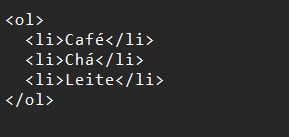

A tag div define uma divisão ou seção em um documento HTML.
Ela serve como um contêiner para outros elementos HTML, que podem ser estilizados com CSS ou manipulados com JavaScript.
Pode conter qualquer tipo de conteúdo.
É frequentemente utilizada para estruturar o layout de uma página.
Pode ser estilizada usando os atributos class ou id.
Por padrão, os navegadores inserem uma quebra de linha antes e depois do elemento div.
Exemplo
Span
A tag div define uma divisão ou seção em um documento HTML.
Ela serve como um contêiner para outros elementos HTML, que podem ser estilizados com CSS ou manipulados com JavaScript.
Pode conter qualquer tipo de conteúdo.
É frequentemente utilizada para estruturar o layout de uma página.
Pode ser estilizada usando os atributos class ou id.
Por padrão, os navegadores inserem uma quebra de linha antes e depois do elemento div.
Exemplo
Img
Os atributos mais importantes são:
src: Especifica o caminho (URL) da imagem.
alt: Define um texto alternativo que descreve a imagem. Esse texto é exibido caso a imagem não seja carregada corretamente ou para usuários com deficiência visual.
title: Opcionalmente, você pode adicionar um título à imagem, que aparecerá quando o usuário passar o mouse sobre ela.
Exemplo
Aside
Definição e Uso:
O elemento HTML aside representa uma seção de uma página que consiste em conteúdo tangencialmente relacionado ao conteúdo ao seu redor.
Esse conteúdo pode ser considerado separado do restante.
Muitas vezes, essas seções são representadas como barras laterais na página.
Exemplos de Conteúdo para aside :
O conteúdo dentro de uma tag aside pode incluir:
Explicações laterais, como a definição de um glossário.
Conteúdo vagamente relacionado, como avisos ou informações contextuais.
Biografias de autores.
Em aplicações web, informações de perfil ou links de blogs relacionados.
Exemplo
Audio
src: Define o caminho para o arquivo de áudio (MP3, OGG, etc.).
controls: Adiciona controles de reprodução (play, pause, volume) ao elemento.
autoplay: Inicia a reprodução do áudio automaticamente quando a página carrega.
loop: Faz com que o áudio seja reproduzido repetidamente.
muted: Define se o áudio deve começar sem som (silenciado).
Existem outros atributos menos comuns para customizar a exibição e comportamento do áudio.
Exemplo
Canva
A tag canvas é um elemento que pode ser usado para desenhar gráficos por meio de scripts, geralmente JavaScript12.
Além de desenhar gráficos, ele pode ser usado para fazer composições de fotos e também para animações2.
A tag canvas é basicamente uma região definida no código HTML com atributos de altura e largura3.
Ela usa vários métodos para desenhar formas personalizadas (como círculos, semicírculos, retângulos e quadrados), caracteres e adicionar imagens3.
Exemplo
Datalista
A tag
A tag datalist especifica uma lista de opções pré-definidas para um elemento input.
Inicialmente, as opções estão ocultas, e a lista delas se torna disponível quando o usuário começa a digitar.
A tag datalist é usada para fornecer um recurso de “autocomplete” para elementos input.
Os usuários verão uma lista suspensa de opções pré-definidas à medida que inserem dados.
O atributo id do elemento
Aqui está um exemplo de como você pode usar a tag datalist:
Exemplo
Details
A tag details é usado para especificar detalhes adicionais que o usuário pode abrir e fechar sob demanda.
Ela é frequentemente usada para criar um widget interativo que o usuário pode abrir e fechar.
Por padrão, o widget está fechado. Quando aberto, ele se expande e exibe o conteúdo dentro.
Qualquer tipo de conteúdo pode ser colocado dentro da tag details.
A tag summary é usada em conjunto com details para especificar um título visível para os detalhes.
Exemplo
Embed
A tag
Este conteúdo é fornecido por um aplicativo externo ou outra fonte de conteúdo interativo, como um plug-in de navegador.
Exemplo
Nav
A tag nav representa uma seção de uma página cujo propósito é fornecer links
de navegação, seja dentro do documento atual ou para outros documentos.
Exemplos comuns de seções de navegação são menus, tabelas de conteúdo e índices.
Exemplo
Output
A tag output é usada para representar o resultado de um cálculo, como um realizado por um script.
Esta tag é útil para cálculos complexos, como os resultados de uma conversão de taxa de câmbio.
Exemplo
progress
A tag
Geralmente, é exibida como uma barra de progresso.
Exemplo
Video
A tag video é usada para incorporar um reprodutor de mídia que suporta a reprodução de vídeo em um documento.
Você pode usar video para conteúdo de áudio também, mas a tag audio pode fornecer uma experiência de usuário mais apropriada.
Exemplo
Ul
A tag ul representa uma lista desordenada, ou seja, uma coleção de itens que não têm uma ordem específica.
Cada item na lista é marcado com um marcador, que pode ter várias formas, como um ponto, um círculo ou um quadrado.
A tag ul é usada em conjunto com a tag li para criar a lista.
Exemplo

Ol
A tag ol representa uma lista ordenada, ou seja, uma coleção de itens que têm uma ordem específica.
Cada item na lista é marcado com um identificador, que pode ser numérico, alfabético, ou simples símbolos.
Exemplo
Li
A tag li do HTML é usada para representar um item em uma lista.
Ela deve estar contida em um elemento pai: uma lista ordenada (ol), uma lista desordenada (ul), ou um menu (menu).
Em menus e listas desordenadas, os itens da lista são geralmente exibidos usando pontos de marcação.
Em listas ordenadas, os itens da lista são geralmente exibidos com números ou letras.